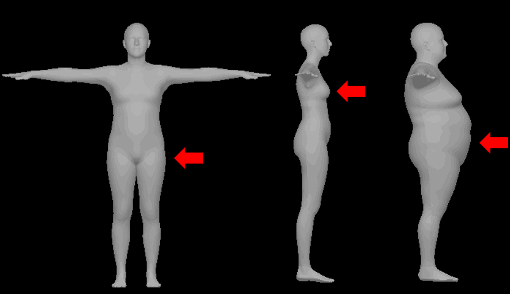

|
I am a fourth year PhD student in the Computer Vision Group at the University of Cambridge, supervised by Prof. Roberto Cipolla and Dr. Ignas Budvytis. My research interests lie in 3D reconstruction of complex, dynamic objects - such as humans. I am also broadly interested in probabilistic machine learning and generative modelling, and work towards adapting models from these fields to 3D reconstruction from 2D observations. This is a fundamentally ill-posed problem, thus motivating a probabilistic approach. Prior to my PhD, I obtained an MEng in Information Engineering from the University of Cambridge. As a student, I have been fortunate to be an intern at Cambridge Quantum, Microsoft Mixed Reality & AI and Google Research. |
{kind=link}
News
- February 2024: My internship at Google Zurich ended with a CVPR 2024 publication: DiffHuman!
- February 2023: HuManiFlow was accepted to CVPR 2023! Paper and code are now public - see below.
Research
|
Akash Sengupta, Thiemo Alldieck, Nikos Kolotouros , Enric Corona , Andrei Zanfir , Cristian Sminchisescu CVPR 2024 Paper / Project Page / Video DiffHuman is a probabilistic method for photorealistic 3D human reconstruction from a single image. Despite the ill-posed nature of this problem, most current methods are deterministic and output a single solution, often resulting in a lack of geometric detail and blurriness in unseen or uncertain regions. We predict a distribution over 3D reconstructions conditioned on an input 2D image, which allows us to sample multiple input-consistent 3D solutions. These often exhibit greater geometric and colour-wise detail than deterministic methods, especially in unseen/uncertain regions. |
|
|
Akash Sengupta, Ignas Budvytis, Roberto Cipolla CVPR 2023 Paper / Video / Poster / Code Probabilistic approaches to 3D human pose and shape estimation exhibit a trade-off between: (i) 2D sample-input consistency, (ii) 3D sample diversity and (iii) distribution accuracy. We predict simultaneously consistent, diverse and accurate distributions by using normalising flows over SO(3), the Lie group of per-body-part poses, and by exploiting the human kinematic tree. This improves performance in downstream tasks, such as model-fitting with an image-conditioned prior. |
|
|
Akash Sengupta, Ignas Budvytis, Roberto Cipolla ICCV 2021 Paper / Video / Poster / Code 3D human pose and shape estimation from a single image is an ill-posed problem, since multiple 3D solutions can explain a 2D image. Thus, we estimate a hierarchical matrix-Fisher probability distribution over body pose conditioned on the observed image. This allows us to sample any number of plausible 3D solutions, and quantify body-part-specific prediction uncertainty. |
|
|  |
Akash Sengupta, Ignas Budvytis, Roberto Cipolla BMVC 2021 Paper Shape parameters in widely-used body models control global deformations over the whole body surface. Predicting probability distributions over global shape parameters does not meaningfully capture local and directional shape prediction uncertainty, e.g. due to camera angles or local occlusions. We present a simple mapping from local body measurements to global shape parameters, and use this to lift distributions over measurements to locally-uncertain distributions over body shape. |

|
Akash Sengupta, Ignas Budvytis, Roberto Cipolla CVPR 2021 Paper / Video / Poster We aim to estimate body shape from a set of multiple images of a subject, without constraints on body pose, camera viewpoint, or background conditions between images. We demonstrate that previous approaches result in inaccurate or inconsistent shape estimates. Our method predicts a distribution over body shape parameters conditioned on each image, which are probabilistically combined to obtain a consistent multi-image shape estimate. |

|
Akash Sengupta, Ignas Budvytis, Roberto Cipolla BMVC 2020 Paper / Code / Data Deep-learning-based 3D human pose and shape estimators often predict inaccurate body shapes, due to a lack of diverse training data with accurate shape labels. We propose an on-the-fly synthetic data pipeline to mitigate data scarcity. In addition, we present an evaluation dataset for body shape estimation, SSP-3D, which consists of images of athletes with a variety of body shapes paired with pseudo-ground-truth 3D shape and pose labels. |
{kind=link}
{kind=link}